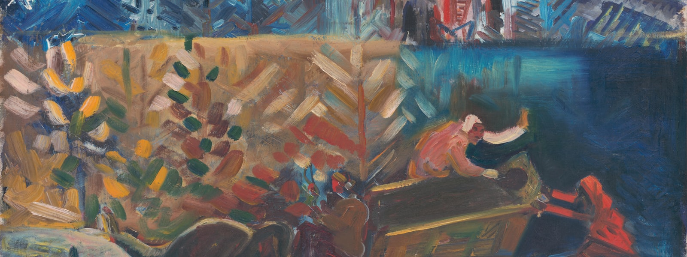
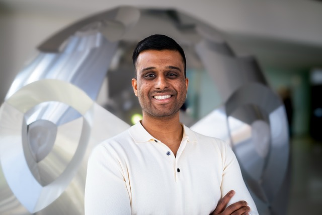
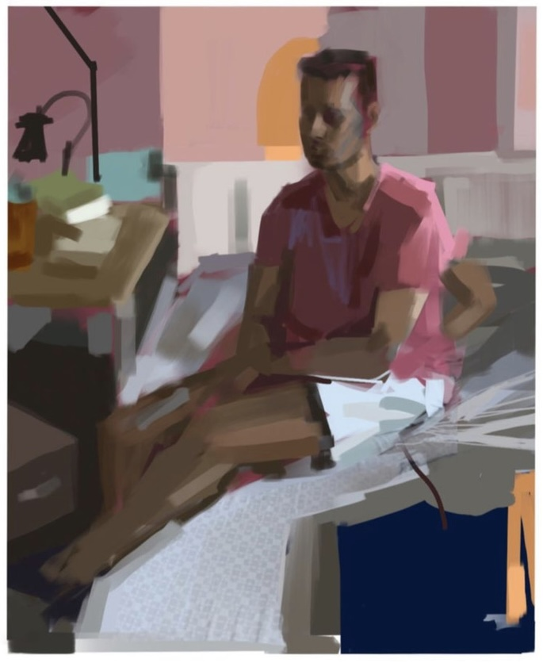

Click to cycle through two living cursors and off:
Your choice is remembered in this browser.



I'm a 3rd-year PhD student at MIT studying computational principles of intelligence specifically how intelligence emerges through embodied interactions, and then building artificial intelligence that can discover new things (artifical discovery).
I'm co-advised by Boris Katz, Ramesh Raskar, and Tomaso Poggio. I also work closely with Brian Cheung at UCSF, with Sebastian Risi at Sakana AI, where I was a research scientist intern on the Frontier Intelligence Group (FIG), and Isaac-Galatzer-Levy Isaac Galatzer-Levy at NYU/Google. I was also a Teaching Assistant at the Brains, Minds, and Machines summer course at the Marine Biological Laboratory in Woods Hole, MA.
My work has been published at Science Advances, ICLR, NeurIPS, CVPR, and ECCV and covered by news outlets such as Science News, MIT News, Hacker News, Forbes, MIT Technology Review, The Globe and Mail, and TEDx Boston. I have also exhibited works at the MIT Museum and the Museum of Science.
Before this, I did my S.M. at MIT on physics-based neural rendering, built the Software 2.0 perception stack at the self-driving startup Optimus Ride, and received my B.S. in ECE from the University of Illinois at Urbana-Champaign.
Writings: